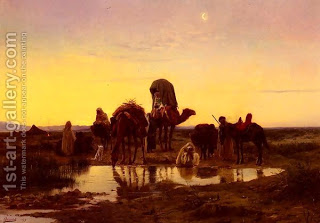

Chullin 122 - The Skin
The hide of an animal is normally not considered as flesh, since it is tough and inedible. Therefore, though the meat connected to it may carry the impurity of dead meat ( nevelah ), the hide itself does not carry this impurity.
In contrast, the skin of the creatures discussed below is treated as their flesh. The first one is that of a human. Thus, the skin of a human corpse conveys corpse impurity. Incidentally, the human skin is prohibited for consumption, like its flesh. Actually, a corpse is prohibited for all benefit.
The skin of the domestic pig is soft and is commonly eaten, and is thus treated as flesh, and according to Rabbi Yehudah also the skin of a wild pig. Other skins are: the skin of the hump of a tender camel, the soft skin of the head of a tender calf, the skin of the hooves, the skin of the pudendum, the skin of a fetus, and the skin of the eight reptiles mentioned in the Torah .
If any of these skins were worked into leather, they become ritually pure, except for human skin. Rabbi Yochanan ben Nuri does not consider the skin of the eight reptiles as flesh.
Art: Eugène-Alexis Girardet - Camel Train By An Oasis At Dawn